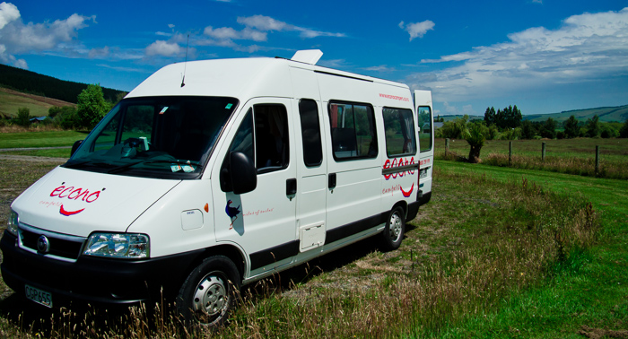

더니든, 캐틀린스
급변하는 날씨를 경험한 하루였습니다. 아침엔 살을 태울 것 같은 강렬한 햇살이 내리쬐고 있었습니다. 점심 즈음엔 자욱한 바다 안개로 인해 앞을 보기 어려울 정도였습니다. 저녁엔 쏟아지는 장대비를 맞으며 힘겨운 운전을 해야만 했었네요.
Dunedin
아침에 눈을 뜨고 캠퍼밴의 커튼을 젖히니 푸른 하늘이 우릴 맞이하고 있었습니다. 3일 만에 드디어 뉴질랜드의 푸른 하늘을 보게 되었습니다. 그동안의 우중충한 구름은 온데간데없이, 푸른 가을 하늘 같은 여름 하늘이 눈앞에 있었습니다. 파랗다 못해 눈이 시릴 정도였죠.
즐거운 마음으로 더니든 시내로 향합니다. 오전엔 더니든을 돌아볼 생각입니다. 사실 우리가 가진 정보는 책 한 권이기에, 그것만으론 부족해서 도시를 가게 되면 항상 [i-Site][]를 들렀습니다. [i-Site][]에서는 주변 여행 정보를 얻을 수 있고, [Holiday Park][] 를 예약할 수도 있으며, 각종 투어를 예약할 수 있습니다. 모든 지역 여행의 시작지점이라 할 수 있습니다.
i-Site를 통해 얻은 시내 볼거리 몇 개를 들고 돌아다니기 시작했습니다.
더니든 기차역은 그 고풍스러운 디자인이 눈길을 끕니다. 사실 이 건물 외에도 고풍스러운 건물은 더 많이 있지만, 유달리 더니든 기차역이 눈에 들어오는 것은, 주변에 아무런 건물도 없기 때문일 겁니다.
또한 옥타곤 거리 바로 옆에는 First Church가 있습니다.
건물도 아름답지만, 그 옆의 잔디밭 또한 멋집니다. 그리고 내부에는 파이프 오르간이 설치되어 있어 아름다운 음악 소리를 들을 수 있었습니다. 연주하시는 분이 여자분인 줄 알았는데 연주를 마치고 교회를 나서는 모습을 보니 나이 지긋하신 어르신이었습니다.
그리곤 거리에서 느긋하게 커피도 마시며 여행을 즐기는 흉내도 좀 내어봅니다. 그래도 바쁜 마음에 가만히 한 시간을 있지를 못하겠더군요. 둘이 서로 재촉하면서 결국 자리를 금방 일어납니다.
오전 내에 구경해야 된다는 압박감에 바로 오타고 대학으로 향합니다. 날씨가 좋은 덕분인지 많은사람이 밖에서 일광욕을 즐기고 있었습니다. 그 모습이 부러운 나머지 우리도 잔디에 드러눕습니다.
사진은 찍어야되니 한명씩 번갈아가면서 말이죠 ^^
대학 주변을 돌아보며 사진을 찍습니다. "남는건 사진뿐이야" 라는 말에 더 부지런히 돌아다닙니다.
사실 오타고 대학까지만 보고 가려고 했는데, 캠핑카를 주차해놓은 곳이 더니든 식물원(Dunedin Botanic Garden) 바로 앞이었습니다. 시간은 촉박한데 입구라도 가보자며 냉큼 들어갔습니다.
내부는 정말 높게 솟은 나무들과 풀과 시내가 어우러진 멋진 식물원이었습니다. 그렇지 않아도 좋은 공기의 더니든인데 식물원에는 상쾌함이 항상 따라다녔습니다.
아내는 신발도 안신고 삼선슬리퍼를 끌고 신 나게 돌아다닙니다. 세상에서 가장 편한 신발이라나요.. :)
Catlins

그렇게 얼렁뚱땅 더니든 유람을 한 후, 곧장 오늘의 하이라이트 캐틀린스로 가려고 했으나 배가 고프네요. -_-;; 중간에 차를 세우고 밥을 먹습니다. 오전에 신 나게 돌아다닌 덕분인지 뭘 먹어도 맛있네요. 길을 가다 세워도 정말 멋진 풍경입니다. 이름도 없는 그저 길가의 한 장소일 뿐인데도 감탄이 나올 모습이 계속 펼쳐집니다.
첫 목적지는 카카포인트(Kaka Point)입니다. 캐틀린스의 시작을 알리는 곳이죠. 캐틀린스는 뉴질랜드 남섬의 남동쪽 해안 영역을 통틀어 말합니다. 카카포인트에서 시작해서 큐리오만(Curio Bay)까지 이어집니다.
카카포인트에 가까이 가면서 점점 안개가 자욱해집니다. 맑은 날씨는 온대 간대 없고 짙은 안개가 캠퍼밴의 앞을 가로막습니다. 캠퍼밴의 전조등을 켜고 갈 지경입니다. 그렇게 가다 보니 어느새 카카포인트입니다. 짙은 안개에 가득하지만, 그 풍경은 참 멋집니다.
바다를 보다가 괜하게 장난기가 발동합니다. 셀프타이머에 놓고 이리저리 사진을 찍는데 서로 찍으면서 웃느라 정신이 없네요.
그 길 따라 그대로 너겟포인트(Nugget Point)로 갑니다. 너겟포인트는 중간에 길이 비포장도로로 바뀌기 때문에 운전하기 까다롭습니다. 길도 좁아서 교차하는 차를 만나면 여간 당혹스러운 게 아닙니다. 특히나 넓은 캠핑카를 만나기라도 하면 ;;
너겟포인트로 들어갈수록 점점 안개는 진해집니다. 너겟포인트가 캐틀린스에서 가장 아름답다고 하는데, 제대로 된 모습을 보긴 힘들어 보입니다.
차를 주차하고 너겟포인트의 등대까지 걸어갑니다. 너겟포인트의 등대는 희미한 안개에 싸여있음에도 멋진 장면을 보여줍니다.
물개도 보이긴 하지만 그래도 먼바다를 볼 수 없는 게 아쉽긴 아쉽네요.
다음 목적지는 나니아연대기의 대관식 장면을 찍었다는 곳인 푸라카우누이만(Purakaunui Bay)입니다. 이곳은 지도에도 잘 나와 있지 않더군요. GPS는 이미 카카포인트를 지난 이후부터는 우리가 허허벌판을 달리고 있다고 표시합니다. GPS가 일반 도시와 관광지는 지도를 거의 정확하게 보여주지만 유독 뉴질랜드 남섬의 남쪽은 그다지 정확히 보여주질 못하더군요. 남쪽을 여행할 계획이 있다면 좀 더 정확한 지도를 준비하는 것이 좋겠습니다.
비포장도로를 열심히 질주하며, 깊이, 더 깊이 들어갑니다. 길이 점점 험난해 집니다. 바다 냄새가 나며 바다 안개가 자욱해지는데 길은 가파르게 올라갑니다. 기어가 2단 이상 올라갈 수가 없을 정도로 험난한 길이 계속됩니다.
그렇게 한참을 가는데, 여기가 아닙니다.;; 차를 돌리기도 어려운 좁은 비포장도로라 한참을 더 들어가 겨우 돌려서 나옵니다. 그리곤 다시 방향을 잡아 달려갑니다.
한 시간을 달렸는데도 여전히 푸라카우누이 만은 나오질 않습니다. 한참을 달리는데 Long Point가 있다고 나오네요. 이거 또 잘못 들어섰나 봅니다. 그동안 운전하면서 헤멘 적이 없는데, 이거 아내가 의심의 눈초리를 보내네요. 가다 보니 차가 한 대 서 있습니다. 포장도로에서는 거의 한시간 가까이 들어오고, 들어오면서 아무런 차 한 대 보질 못했는데, 떡하니 한 대가 있으니 왠지 두려움 반 긴장 반 입니다.
차를 멈추고 당최 여기가 어딘지 물어보려는데, 남녀가 샐러드를 마치 밥처럼 먹고 있더군요 -_-;; 밥처럼 먹는다는 게 어떤 모습이었냐면, 저희 부부가 다가가는데 다마스같이 생긴 작은 봉고 캠핑카 문을 열어두고 그 발판에 걸터앉아서 커다란 그릇에 샐러드를 담아 비빔밥같이 소스에 비벼 먹고 있는 모습이었습니다. 새로운 문화 충격입니다. 샐러드를 주식으로 먹는 모습은 한 번도 보지 못했는데 신기하네요.
먹을 때는 개도 안 건드린다고 하지만 제 코가 석 자라 그래도 물어봅니다. 커플은 차에서 지도까지 꺼내오는 친절을 발휘하면서, "you got the wrong wrong way."라고 말해줍니다. "여긴 아닌가벼~" 말하고 돌아섭니다.
다시 푸라카우누이를 찾아가기엔 헤맬 걱정이 있고, 시간도 어느새 저녁이 가까워져 옵니다.

돌아와서 알아보니 Long Point 바로 옆이 푸라카우누이였습니다. 위의 멋들어진 사진이 Long Point에서 바라본 풍경입니다. 안개 자욱해서 이렇게 보이진 않았겠지만 지금 생각해보면 아쉬움이 많습니다. 푸라카우누이 가는 길에 거의 다 갔을 때 위쪽으로 올라가는 길이 아닌 아래로 직진하는 길이 푸라카우누이 가는 길이고 위로 가면 우리가 헤맸던 Long Point 가는 길이었습니다.
아쉬움을 뒤로 한 채 큐리오 만으로 향합니다. 날씨도 안 좋고 시간도 늦었지만 큐리오 만으로 가는 이유는, 그동안 보지 못했던 펭귄을 보기 위함입니다. 오아마루에서도 펭귄을 못 봤고, 오타고에서는 캐틀린스에서 볼 수 있다는 생각에 못 봤었습니다. 여기를 벗어나면 펭귄을 볼 기회가 더는 없었습니다. 그래서 반드시 가야 했습니다.
어둑어둑해진 큐리오 만에 달려가서 결국 펭귄을 보았습니다. 슬슬 집으로 들어오는 때라 뛰기도 하고 고개도 갸우뚱하는 펭귄이 정말 귀엽습니다. ^^ 뛰는 것이 익숙하지 않은지 뛰어서 바위를 건너다 넘어지기까지 합니다. 날씨가 좋지 않은 탓인지 그다지 많은 펭귄을 볼 수 없었지만 그래도 드디어 펭귄을 보았습니다.
인버카길 Top 10 홀리데이파크에 도착하니 밤 9시 반이 넘었습니다. 340km 정도 밖에 달리지 않았지만 비포장도로를 3~4시간을 달리고 나니 몸이 여간 피곤한 게 아닙니다. 도착하자마자 남은 스테이크 고기를 구워서 먹고, 스파게티까지 먹어치웠습니다. 체력 소모가 심한 듯 마구마구 들어갑니다. 씻고 바로 기억을 잃었습니다. ;; 신혼여행이 아니라 마치 고생을 사서 하려고 작정한 여행인 것 같은 느낌이 마구 듭니다. 그래도 즐거워하는 아내 모습을 보니 피곤하긴 해도 보람은 있네요. 아내 혼자 두고 캐나다 [워킹홀리데이][06canada]를 가서 혼자 즐긴 게 맘에 걸렸는데 조금은 그 짐을 덜게 되는 것 같네요.